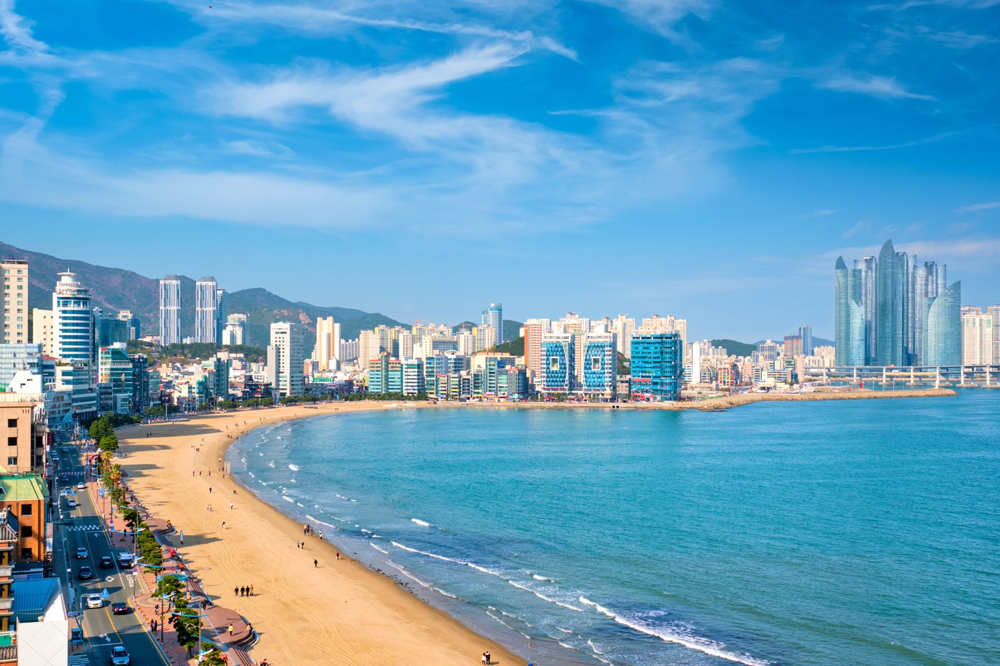
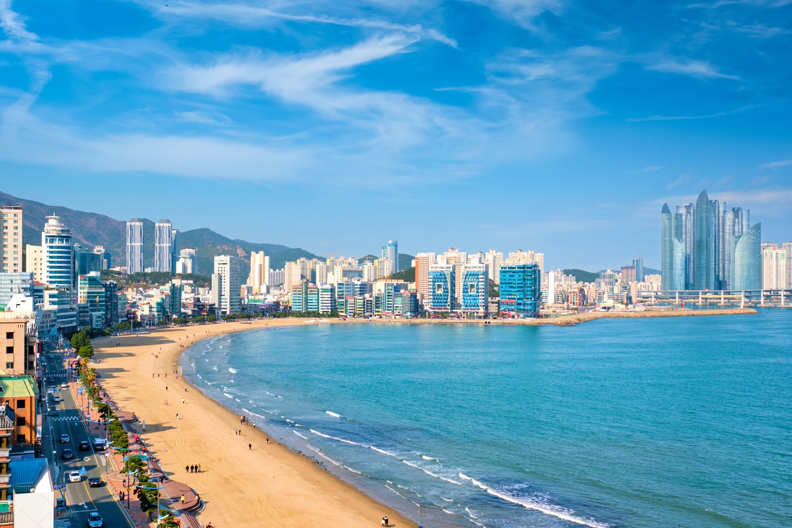
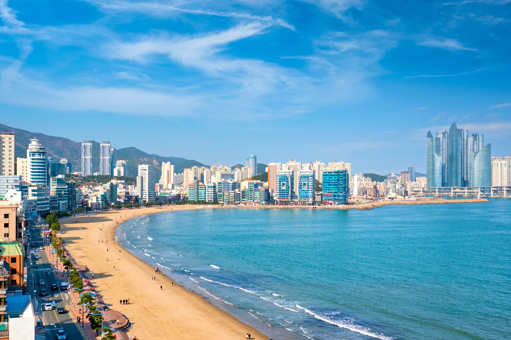

Discover Korea's Landmarks

 

Welcome to TourMate, your ultimate guide to exploring South Korea's vibrant cities. Whether you're looking for rich cultural experiences, delicious food, or stunning landscapes, you’ve come to the right place!
